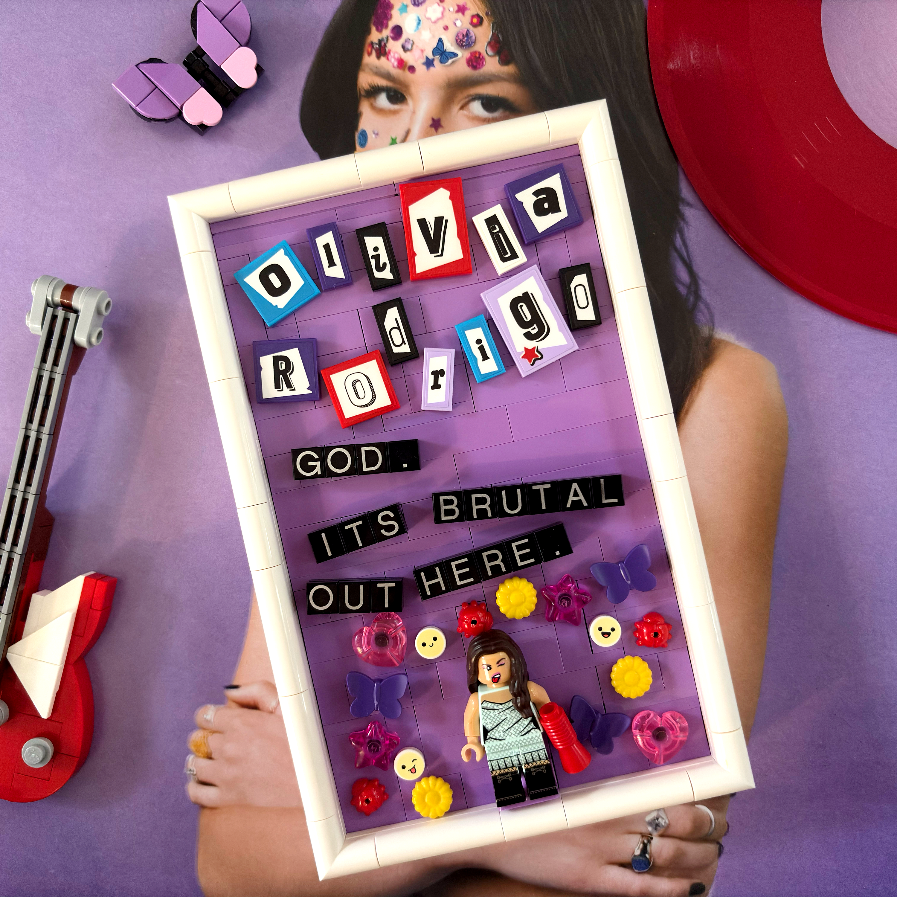
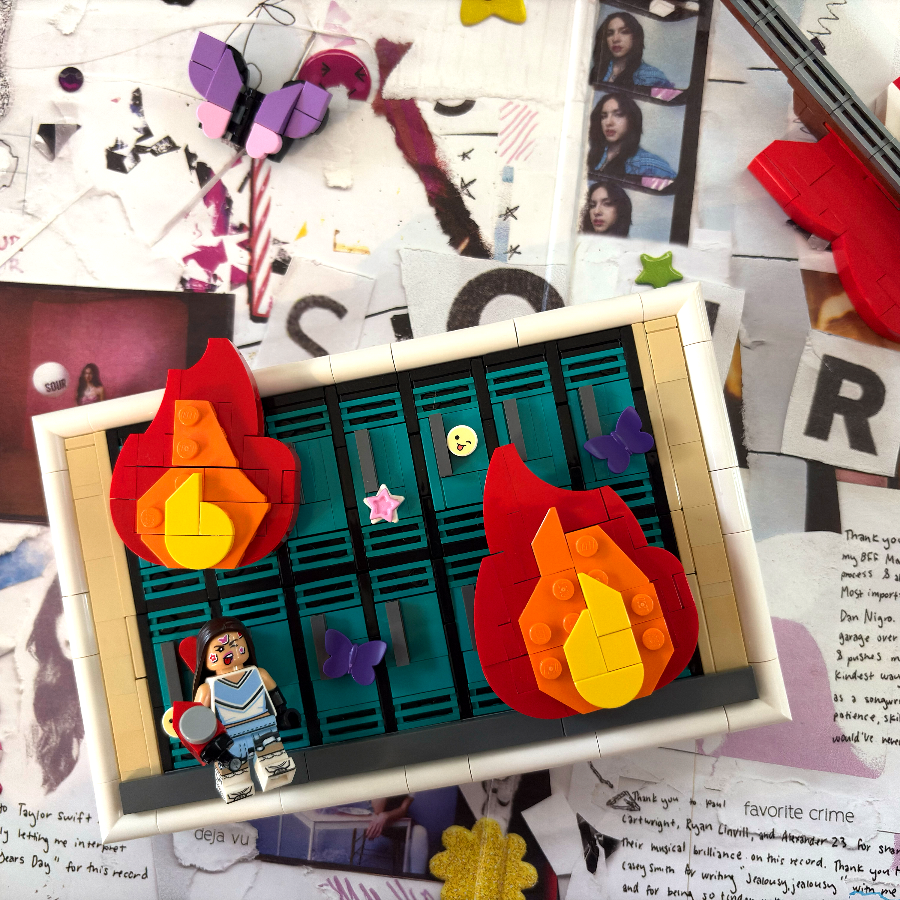
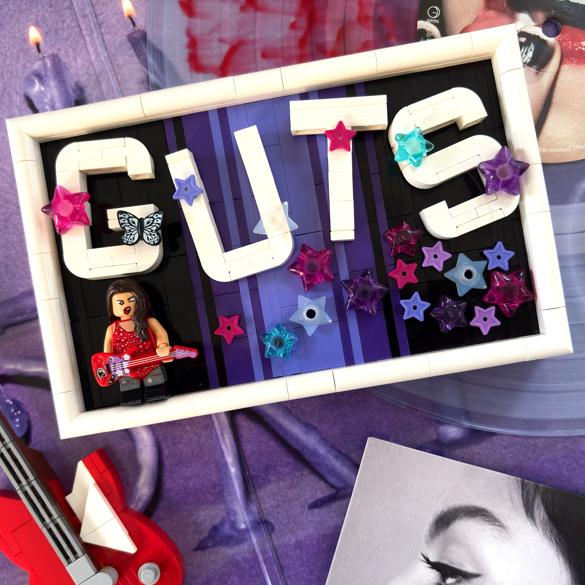
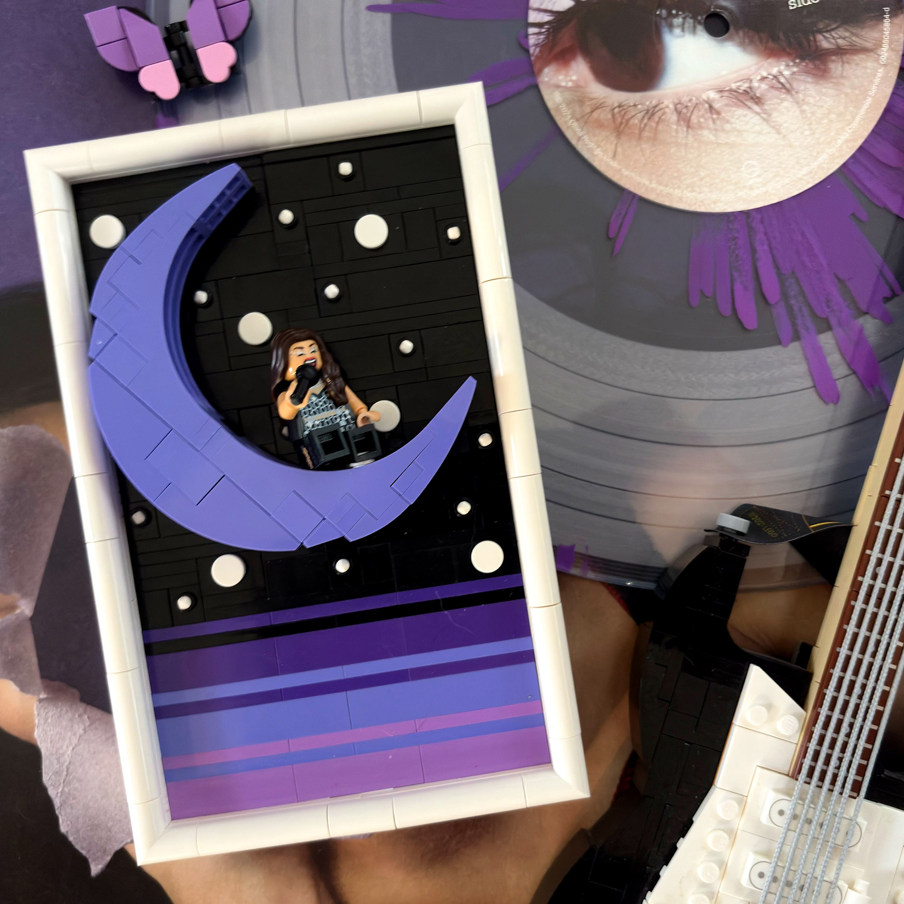
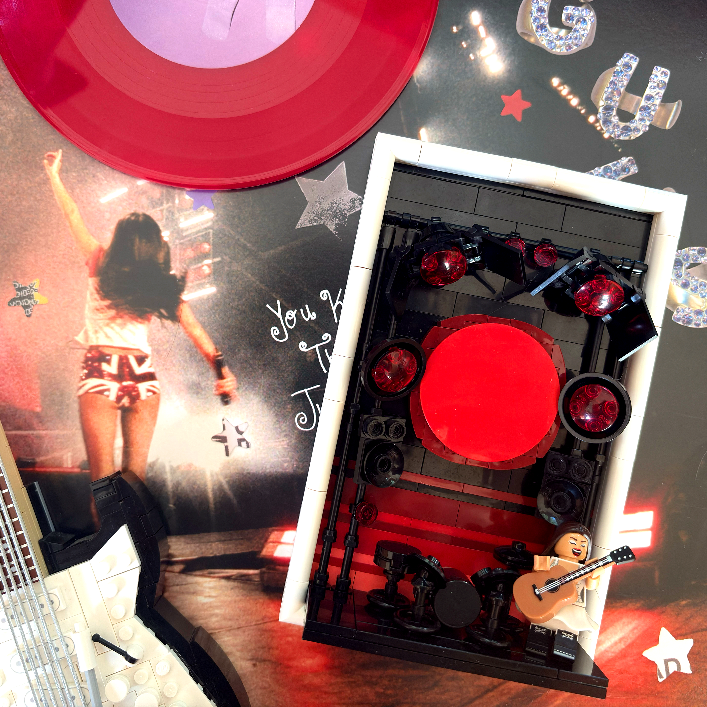

When I first saw the leaks that Olivia Rodrigo and LEGO were collaborating back in late 2025, I was incredibly excited. I had no idea what the collaboration would entail, but a partnership between my favorite artist and my favorite brand was something I never would've imagined. When the sets were finally revealed, I was stoked to see such detailed Olivia Rodrigo minifigures, but the sets themselves weren't quite what I wanted to display.
Although I initially wasn't planning on purchasing any of the sets (or, well, nearly all of them), I knew I wanted to create individual displays for each minifigure that captured their unique scenes, eras, and origins.
LEGO introduced its new blue-violet color in early 2026, and at the time, many of the pieces I wanted were exclusive to the Olivia Rodrigo sets. I ended up incorporating several of them into my designs. When I started sourcing individual parts through BrickLink, however, I quickly realized just how expensive some of them were. That left me with two options: purchase the sets and part them out, getting the minifigures and the pieces I needed along with a whole lot of extras, or spend even more money buying just the individual parts and minifigures. Needless to say, I went with the former.
My goal was to create an environment for each minifigure that felt intrinsically tied to their identity. I did a ton of research to make everything as accurate as possible, and after several parts orders and a LOT of money (seriously, I do NOT recommend sourcing Clikits pieces for these displays, despite how awesome they look), I think the results speak for themselves.

Although the SOUR Tour has its own distinct branding, I felt it made more sense to tie this display to the album as a whole, since the tour closely resembles the album's visual identity. One of my main goals was to recreate the stickers featured on Olivia's face on the album cover and use them to surround the minifigure. With Scala flowers, Friends ladybugs, printed smiley-face tiles, and Clikits hearts, I think I captured that look really well.
I also included the text "God. It's brutal out here." as it's one of my favorite lyrics from the album, as well as a line that's instantly recognizable from the SOUR era.

My original plan was to recreate the gas station scene from the music video, but after plenty of trial and error, I couldn't find a way to represent it accurately while keeping the design cohesive with the other displays. I went back to the drawing board and realized the solution had been right in front of me the whole time: the single's cover art features Olivia in a locker room.
From there, the design came together pretty quickly. There are some interesting building techniques at play to get everything lined up just right, and this is definitely my favorite of the bunch. I brought in some of the details from the SOUR Tour display to represent the stickers on the lockers, then added stylized flame builds to tie everything together.

Aside from a few challenges with the lettering, this was the easiest display for me to design. I immediately knew I wanted to recreate the GUTS World Tour poster, and I think I got it down to a T.
The instructions I created use standard star elements with pin connections alongside the new satin trans-clear star elements from the official Olivia Rodrigo sets. However, it was the Clikits stars that really sold me on this design. They fit the look perfectly and add so much visual interest. I wouldn't recommend sourcing them given their cost, but they really make this display pop.

This was the first display I designed, and it's heavily inspired by 21340 Tales of the Space Age, one of my favorite modern LEGO sets. Of all five displays, this one is also the closest to the official Olivia Rodrigo sets, although I modified the moon build quite a bit to give it a more pronounced crescent shape.
One limitation is that the minifigure can't sit securely on the moon. I'm sure it would be possible to add a 1x1 SNOT brick and a trans-clear bar to hold her in place, but for my display, I simply used a white Technic pin and rested it against the underside of the slope.

Also inspired by 21340 Tales of the Space Age, this was another challenging design to bring together. Unlike the other outfits, there wasn't as much source material available to work from, particularly when it came to finding photos of the concert.
The standout scene I wanted to recreate was the enormous red moon on the screen behind Olivia. Its contrast against her white outfit made it the perfect focal point for the display. I wanted to give the moon more texture, but every approach I tried seemed to detract from the overall look. Instead, I used dark red slopes around it to suggest a glowing effect.
I also incorporated a ton of black bars to recreate the stage scaffolding. After several iterations, I think this version really stands out while still feeling like it's part of the collection.
I truly hope we get more official LEGO sets in collaboration with Olivia Rodrigo, because I'd love to create displays for OR3. It's probably my favorite album of all time, and I'd especially love to try recreating the stage from her tour.
Regardless of what comes next, this project has been a dream come true. Getting to combine two of my favorite things, experiment with new building techniques, and create something that feels uniquely my own has been an incredible experience. I'm so happy with how these displays turned out!